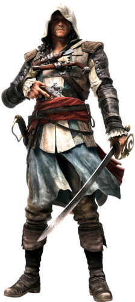

.
.
Edward was born in Swansea, Wales, to Bernard and Linette Kenway; at the age of ten, his family relocated to a farm in Bristol, in South West England.[1] However, the pastoral life did not agree with Edward and he became a well-known troublemaker in his adolescence.At the age of seventeen, Edward met Caroline Scott, who intervened on his behalf during an altercation outside the Auld Shillelagh tavern, in which Edward was defending Rose, one of the Scott family's housemaids, from being raped by Tom Cobleigh. Edward immediately fell in love with Caroline and asked her to meet again sometime, but she refused, as her father would not allow such a breach of social etiquette after having already promised her to Matthew Hague, the son of a prominent East India Company executive.Despite their differences in social status, Edward still pursued his love for Caroline.[1] Through Rose, Edward learned that Caroline often visited Bristol's port on a weekly basis. Hoping to attract her attention, Edward recruited a young street urchin named Albert to present Caroline with a bouquet of flowers on his behalf. As the boy set off, Edward realized too late that Albert was a thief who intended to steal Caroline's purse.As Edward moved forward to stop Albert, the thief successfully snatched Caroline's money, but in the process was noticed by her nearby suitor, Matthew, and his hulking bodyguard, Wilson, who caught the criminal and proceeded to beat him. Finally reaching the scene, Edward subdued Wilson before forcing Albert to apologize. Drawn to his fearless conduct, Caroline met Edward that night outside his house.Setting out for a midnight stroll, Caroline explained to Edward how the thought of becoming Hague's wife, and what society expected her to do after the marriage, sickened her. At the same time, she knew that starting a relationship with Edward would incur the wrath of her father upon them both. Despite the looming threat of Emmett's imminent anger, the couple maintained a secret relationship for the next several months. They were married in 1712, and Caroline became pregnant with a daughter, Jennifer Scott, unbeknownst to Edward.